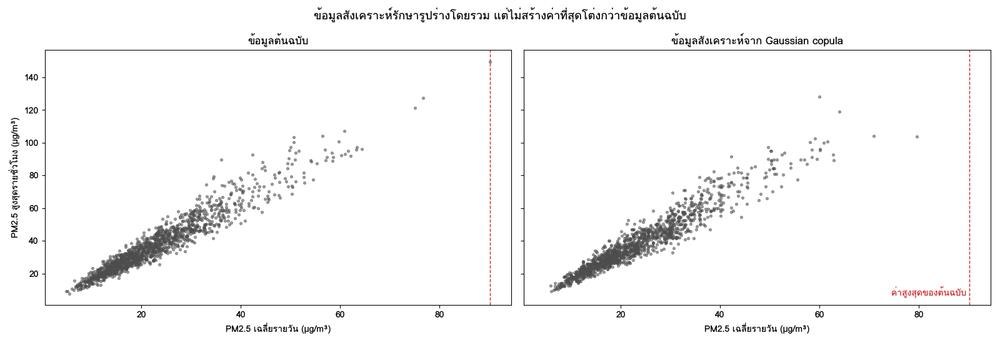

flowchart LR
A["ข้อมูลที่เผยแพร่<br/>อายุ เพศ ตำบล วันที่ การวินิจฉัย"] --> J{"เชื่อมด้วย<br/>อายุ เพศ ตำบล"}
B["ข้อมูลภายนอก<br/>โพสต์สาธารณะ ข่าว ทะเบียน<br/>ชื่อ อายุ เพศ ตำบล"] --> J
J --> C["รู้การวินิจฉัย<br/>ของบุคคลที่ระบุชื่อได้"]
16 ข้อมูลสังเคราะห์และความเป็นส่วนตัว
ข้อมูล PM2.5 รายสถานีที่ใช้ตลอดเล่มไม่ใช่ข้อมูลส่วนบุคคล แต่คำถามที่น่าสนใจที่สุดหลายข้อเกี่ยวกับคน เช่น “ฝุ่นที่สูงขึ้นสัมพันธ์กับจำนวนผู้ป่วยโรคทางเดินหายใจหรือไม่” หรือ “กลุ่มใดได้รับผลกระทบมากที่สุด” ทันทีที่โครงการเชื่อมข้อมูลสิ่งแวดล้อมกับข้อมูลระดับบุคคล นักวิทยาการข้อมูลก็มีหน้าที่ทั้งทางกฎหมายและทางจริยธรรมต่อคนที่อยู่ในข้อมูล คนเหล่านั้นไม่ได้อยู่ในห้องตอนที่เราวิเคราะห์ แต่ผลของการตัดสินใจของเราตกอยู่กับพวกเขา
บทนี้มีสองส่วนที่เกี่ยวข้องกัน ส่วนแรกคือ ความเป็นส่วนตัว ได้แก่ พระราชบัญญัติคุ้มครองข้อมูลส่วนบุคคล พ.ศ. 2562 (PDPA) ความต่างระหว่างการทำให้เป็นข้อมูลนิรนามกับการแฝงข้อมูล และเหตุผลที่การลบชื่อออกอย่างเดียวไม่พอ ส่วนที่สองคือ ข้อมูลสังเคราะห์ ซึ่งเป็นเครื่องมือที่ทำให้พัฒนาและทดสอบระบบได้โดยไม่ต้องแตะข้อมูลจริง แต่มีขีดจำกัดที่ต้องเข้าใจ ข้อมูลสังเคราะห์ไม่ได้ปลอดภัยโดยอัตโนมัติ และไม่ได้เป็นตัวแทนของความจริงโดยอัตโนมัติ
Importantไม่ใช่คำปรึกษาทางกฎหมาย
เนื้อหาเกี่ยวกับกฎหมายในบทนี้เป็นการอธิบายเชิงวิชาการเพื่อให้นักวิทยาการข้อมูลเข้าใจหลักการและรู้ว่าเมื่อใดต้องขอคำปรึกษา ไม่ใช่คำปรึกษาทางกฎหมาย การใช้ข้อมูลส่วนบุคคลจริงต้องตรวจสอบกับตัวบทกฎหมายฉบับทางการ ประกาศของคณะกรรมการคุ้มครองข้อมูลส่วนบุคคล และเจ้าหน้าที่คุ้มครองข้อมูลส่วนบุคคลหรือที่ปรึกษากฎหมายขององค์กร
วัตถุประสงค์การเรียนรู้
เมื่อจบบทนี้ ผู้อ่านสามารถ
- อธิบายหลักการสำคัญของ PDPA ที่เกี่ยวกับงานวิทยาการข้อมูล ได้แก่ ฐานทางกฎหมาย วัตถุประสงค์ การใช้เท่าที่จำเป็น และหน้าที่ด้านความปลอดภัย
- จำแนกข้อมูลส่วนบุคคล ข้อมูลที่ระบุตัวทางอ้อม และข้อมูลส่วนบุคคลที่มีความอ่อนไหว ในโครงการที่เชื่อมข้อมูลสิ่งแวดล้อมกับข้อมูลสุขภาพ
- เปรียบเทียบการทำให้เป็นข้อมูลนิรนามกับการแฝงข้อมูล และเลือกเทคนิคที่เหมาะกับการใช้งาน
- ประเมินความเสี่ยงการระบุตัวตนซ้ำด้วย k-anonymity และ l-diversity และอธิบายแนวคิดของ differential privacy
- สร้างข้อมูลสังเคราะห์แบบกฎด้วย Faker และแบบสถิติด้วย copula และอธิบายความต่างของสองแนวทาง
- ประเมินข้อมูลสังเคราะห์ทั้งด้านประโยชน์ใช้สอยและด้านความเป็นส่วนตัว
- ใช้ SMOTE กับปัญหาข้อมูลไม่สมดุลอย่างถูกต้อง โดยไม่ทำให้เกิดการรั่วไหลของข้อมูล
16.1 พ.ร.บ.คุ้มครองข้อมูลส่วนบุคคล พ.ศ. 2562 สำหรับนักวิทยาการข้อมูล
ภาพรวม
พระราชบัญญัติคุ้มครองข้อมูลส่วนบุคคล พ.ศ. 2562 (PDPA) (ราชกิจจานุเบกษา 2019) ประกาศในราชกิจจานุเบกษาเมื่อเดือนพฤษภาคม พ.ศ. 2562 (ค.ศ. 2019) และมีผลใช้บังคับเต็มรูปแบบตั้งแต่วันที่ 1 มิถุนายน พ.ศ. 2565 (ค.ศ. 2022) หลังการเลื่อนบังคับใช้บางหมวด กฎหมายนี้วางกติกาว่าการเก็บรวบรวม ใช้ และเปิดเผยข้อมูลส่วนบุคคลทำได้เมื่อใด และกำหนดสิทธิของบุคคลที่เป็นเจ้าของข้อมูล หน่วยงานที่กำกับดูแลคือสำนักงานคณะกรรมการคุ้มครองข้อมูลส่วนบุคคล (สคส.) PDPA มีโครงสร้างและแนวคิดใกล้เคียงกับ General Data Protection Regulation (GDPR) ของสหภาพยุโรป (European Parliament and Council of the European Union 2016) แต่มีรายละเอียดต่างกัน จึงไม่ควรนำคำอธิบายของ GDPR มาใช้แทนโดยตรง
บทบาทในกฎหมาย
| บทบาท | ความหมาย | ตัวอย่างในโครงการ PM2.5 กับสุขภาพ |
|---|---|---|
| เจ้าของข้อมูลส่วนบุคคล (data subject) | บุคคลที่ข้อมูลนั้นระบุตัวได้ | ผู้ป่วยที่มารับบริการ |
| ผู้ควบคุมข้อมูลส่วนบุคคล (data controller) | ผู้มีอำนาจตัดสินใจว่าจะเก็บ ใช้ หรือเปิดเผยข้อมูลเพื่ออะไรและอย่างไร | โรงพยาบาล หรือหน่วยงานที่ตั้งโครงการวิจัย |
| ผู้ประมวลผลข้อมูลส่วนบุคคล (data processor) | ผู้ดำเนินการตามคำสั่งหรือในนามของผู้ควบคุม | ทีมวิเคราะห์ที่ได้รับมอบหมายตามสัญญา หรือผู้ให้บริการคลาวด์ |
นักวิทยาการข้อมูลในองค์กรมักไม่ได้เป็นผู้ควบคุมข้อมูลในทางกฎหมายเอง แต่การตัดสินใจทางเทคนิคของเรา เช่น เก็บคอลัมน์ใด เก็บไว้ที่ใด และใครเข้าถึงได้ คือสิ่งที่ทำให้ผู้ควบคุมทำตามกฎหมายได้หรือไม่ได้
หลักการที่กระทบงานวิเคราะห์โดยตรง
PDPA มีหลักการหลายข้อที่แปลงเป็นการตัดสินใจทางเทคนิคได้ตรง ๆ
| หลักการ | สาระโดยสรุป | ผลต่องานวิเคราะห์ |
|---|---|---|
| ต้องมีฐานทางกฎหมาย | การเก็บรวบรวมต้องอาศัยความยินยอมหรือฐานอื่นที่กฎหมายกำหนด (มาตรา 19 และ 24) | ต้องรู้ว่าข้อมูลที่ได้รับมามีฐานใด และฐานนั้นครอบคลุมการวิเคราะห์ของเราหรือไม่ |
| ใช้ตามวัตถุประสงค์ | ใช้หรือเปิดเผยตามวัตถุประสงค์ที่แจ้งไว้ (มาตรา 21) | การนำข้อมูลที่เก็บเพื่อการรักษาไปใช้วิจัยต้องมีฐานรองรับ ไม่ใช่ใช้ได้เพราะมีอยู่แล้ว |
| เท่าที่จำเป็น | เก็บรวบรวมเท่าที่จำเป็นภายใต้วัตถุประสงค์ (มาตรา 22) | ขอเฉพาะคอลัมน์และความละเอียดที่ต้องใช้ เช่น อำเภอแทนที่อยู่ เดือนแทนวันเกิด |
| แจ้งให้ทราบ | แจ้งรายละเอียดการเก็บและใช้แก่เจ้าของข้อมูล (มาตรา 23) | กระทบการออกแบบแบบสอบถามหรือแอปที่เก็บข้อมูลเอง |
| ความปลอดภัย | ผู้ควบคุมต้องจัดให้มีมาตรการรักษาความมั่นคงปลอดภัยที่เหมาะสม และแจ้งเหตุละเมิดต่อ สคส. ภายใน 72 ชั่วโมงนับแต่ทราบเหตุเท่าที่ทำได้ (มาตรา 37) | ห้ามเก็บข้อมูลจริงใน repository แล็ปท็อปส่วนตัว หรือบริการที่ไม่ได้รับอนุญาต |
มาตรา 24 กำหนดกรณีที่เก็บรวบรวมข้อมูลส่วนบุคคลได้โดยไม่ต้องขอความยินยอม ซึ่งรวมถึงการศึกษาวิจัยหรือสถิติที่มีมาตรการปกป้องที่เหมาะสม การป้องกันอันตรายต่อชีวิตหรือสุขภาพ การปฏิบัติตามสัญญา ภารกิจเพื่อประโยชน์สาธารณะ ประโยชน์อันชอบธรรม และการปฏิบัติตามกฎหมาย แต่ข้อมูลส่วนบุคคลที่มีความอ่อนไหวมีเงื่อนไขเข้มกว่าตามมาตรา 26 (หัวข้อ 16.2) การตัดสินว่าโครงการใดเข้าฐานใดเป็นงานของผู้ควบคุมข้อมูลและที่ปรึกษากฎหมาย ไม่ใช่ของผู้วิเคราะห์
สิทธิของเจ้าของข้อมูล
หมวด 3 ของ PDPA กำหนดสิทธิของเจ้าของข้อมูล เช่น สิทธิขอเข้าถึงและรับสำเนา สิทธิคัดค้าน สิทธิขอให้ลบ ทำลาย หรือทำให้ข้อมูลเป็นข้อมูลที่ไม่สามารถระบุตัวบุคคลได้ และสิทธิขอให้แก้ไขข้อมูลให้ถูกต้อง สิทธิเหล่านี้มีผลต่อการออกแบบระบบ ถ้าเจ้าของข้อมูลขอให้ลบ ระบบต้องหาข้อมูลของคนนั้นได้ในทุกตาราง รวมถึงสำเนาที่อยู่ใน notebook และไฟล์ส่งออก การมีสำเนาข้อมูลกระจายอยู่หลายที่จึงเป็นทั้งความเสี่ยงด้านความปลอดภัยและอุปสรรคต่อการปฏิบัติตามสิทธิ
ผลต่อการทำงานของนักวิทยาการข้อมูล
หลักการทั้งหมดข้างต้นสรุปเป็นแนวปฏิบัติของรายวิชาและของเล่มนี้ได้ดังนี้
- ห้ามนำข้อมูลส่วนบุคคลจริงเข้า repository ไม่ว่าจะเป็น public หรือ private และห้ามเก็บในเครื่องส่วนตัวโดยไม่ได้รับอนุญาต ไฟล์
.gitignoreต้องกันโฟลเดอร์data/ไว้ (บทที่ 2) - โครงการที่ต้องใช้ข้อมูลระดับบุคคลจริง ต้องผ่านผู้สอนและคณะกรรมการจริยธรรมการวิจัยในมนุษย์ของสถาบันก่อน
- ระหว่างพัฒนา ใช้ข้อมูลสังเคราะห์หรือข้อมูลรวม เช่น จำนวนผู้ป่วยต่อจังหวัดต่อสัปดาห์จากรายงานที่เผยแพร่แล้ว (หัวข้อ 16.6)
- ขอเท่าที่จำเป็น ถ้าคำถามระดับจังหวัดต่อสัปดาห์ ก็ไม่ต้องขอข้อมูลระดับบุคคลเลย
- บันทึก แหล่งที่มา ฐานทางกฎหมาย เงื่อนไขการใช้ และมาตรการปกป้องไว้ใน
README.mdของโครงการ
16.2 ข้อมูลส่วนบุคคลและข้อมูลอ่อนไหว
นิยามของข้อมูลส่วนบุคคล
PDPA มาตรา 6 นิยาม ข้อมูลส่วนบุคคล (personal data) ว่าเป็นข้อมูลเกี่ยวกับบุคคลซึ่งทำให้สามารถระบุตัวบุคคลนั้นได้ ไม่ว่าทางตรงหรือทางอ้อม แต่ไม่รวมถึงข้อมูลของผู้ถึงแก่กรรมโดยเฉพาะ คำสำคัญคือ ทางอ้อม ข้อมูลไม่จำเป็นต้องมีชื่อจึงจะเป็นข้อมูลส่วนบุคคล
| ประเภท | ความหมาย | ตัวอย่าง |
|---|---|---|
| ตัวระบุตรง (direct identifier) | ระบุตัวได้ด้วยตัวเอง | ชื่อ–นามสกุล เลขประจำตัวประชาชน เบอร์โทรศัพท์ อีเมล เลขประจำตัวผู้ป่วย (HN) |
| ตัวระบุทางอ้อม (quasi-identifier) | ระบุตัวได้เมื่อรวมกันหรือเชื่อมกับข้อมูลอื่น | อายุ เพศ ตำบล วันที่เข้ารับบริการ อาชีพ |
| ข้อมูลที่เป็นประเด็น (sensitive attribute) | สิ่งที่ผู้โจมตีอยากรู้ | การวินิจฉัยโรค ผลตรวจ |
ข้อมูลส่วนบุคคลที่มีความอ่อนไหว
มาตรา 26 กำหนด ข้อมูลส่วนบุคคลที่มีความอ่อนไหว (sensitive data) ซึ่งได้แก่ เชื้อชาติ เผ่าพันธุ์ ความคิดเห็นทางการเมือง ความเชื่อในลัทธิ ศาสนาหรือปรัชญา พฤติกรรมทางเพศ ประวัติอาชญากรรม ข้อมูลสุขภาพ ความพิการ ข้อมูลสหภาพแรงงาน ข้อมูลพันธุกรรม ข้อมูลชีวภาพ และข้อมูลอื่นที่คณะกรรมการประกาศกำหนด การเก็บรวบรวมข้อมูลเหล่านี้ต้องได้รับความยินยอมโดยชัดแจ้ง เว้นแต่เข้าข้อยกเว้นที่กฎหมายกำหนด ซึ่งรวมถึงการศึกษาวิจัยทางวิทยาศาสตร์ ประวัติศาสตร์ หรือสถิติ ที่ทำเท่าที่จำเป็นและมีมาตรการคุ้มครองที่เหมาะสมตามที่คณะกรรมการประกาศกำหนด
สำหรับโครงการในเล่มนี้ ข้อสรุปที่สำคัญคือ ข้อมูลการเข้ารับบริการทางการแพทย์รายบุคคลเป็นข้อมูลสุขภาพ จึงเป็นข้อมูลอ่อนไหว แม้ตัดชื่อออกแล้ว ถ้ายังมีอายุ เพศ ตำบล และวันที่ ก็ยังระบุตัวได้ทางอ้อม โดยเฉพาะในชุมชนเล็ก
ข้อมูลสิ่งแวดล้อมเป็นข้อมูลส่วนบุคคลได้หรือไม่
ข้อมูล PM2.5 จากสถานีของรัฐไม่ใช่ข้อมูลส่วนบุคคล เพราะไม่เกี่ยวกับบุคคลใด แต่ข้อมูลที่ดูเหมือนข้อมูลสิ่งแวดล้อมก็อาจกลายเป็นข้อมูลส่วนบุคคลได้ในบางบริบท
| ข้อมูล | เป็นข้อมูลส่วนบุคคลหรือไม่ | เหตุผล |
|---|---|---|
| PM2.5 รายชั่วโมงของสถานี Air4Thai | ไม่ | เกี่ยวกับพื้นที่ ไม่ได้เกี่ยวกับบุคคล |
| PM2.5 จากเครื่องวัดในบ้านที่ผูกกับบัญชีผู้ใช้ | น่าจะเป็น | ระบุเจ้าของได้ และรูปแบบค่าตามเวลาเผยพฤติกรรม เช่น เวลาที่อยู่บ้านหรือเวลาทำอาหาร |
| พิกัด GPS ของอาสาสมัครที่ถือเครื่องวัดแบบพกพา | เป็น | ข้อมูลตำแหน่งตามเวลาระบุตัวได้ง่ายมาก |
| จำนวนผู้ป่วยต่อจังหวัดต่อเดือนจากรายงานสาธารณะ | โดยทั่วไปไม่ | เป็นข้อมูลรวม ยกเว้นช่องที่มีจำนวนน้อยมากจนระบุตัวได้ |
ข้อมูลตำแหน่งตามเวลาอันตรายเป็นพิเศษ งานของ de Montjoye และคณะ (Montjoye และคณะ 2013) พบว่าจุดตำแหน่งและเวลาเพียงสี่จุดจากข้อมูลโทรศัพท์มือถือก็เพียงพอที่จะระบุตัวบุคคลได้ถึง 95% ของผู้ใช้ในชุดข้อมูลที่ศึกษา โครงการที่ให้อาสาสมัครพกเครื่องวัดฝุ่นแบบพกพาจึงต้องจัดการข้อมูลตำแหน่งด้วยความระวังเท่ากับข้อมูลสุขภาพ
ทำแผนที่ของข้อมูลก่อนเริ่ม
ก่อนเชื่อมข้อมูลสุขภาพกับข้อมูล PM2.5 ควรจัดทำตารางที่ระบุทุกคอลัมน์ว่าเป็นประเภทใด จำเป็นต่อคำถามหรือไม่ และจะจัดการอย่างไร ตารางนี้เป็นส่วนหนึ่งของพจนานุกรมข้อมูลและใช้ในการประเมินผลกระทบด้านความเป็นส่วนตัว
| คอลัมน์ | ประเภท | จำเป็นหรือไม่ | การจัดการ |
|---|---|---|---|
patient_name |
ตัวระบุตรง | ไม่ | ไม่ขอ |
hn |
ตัวระบุตรง | เพื่อนับคนไม่ซ้ำเท่านั้น | แทนด้วยรหัสแฝงที่ผู้ควบคุมสร้าง |
birth_date |
ตัวระบุทางอ้อม | ต้องการเพียงกลุ่มอายุ | ขอเป็นกลุ่มอายุ 10 ปี |
subdistrict |
ตัวระบุทางอ้อม | คำถามอยู่ระดับจังหวัด | ขอเป็นจังหวัด |
visit_date |
ตัวระบุทางอ้อม | ต้องการรายสัปดาห์ | ขอเป็นสัปดาห์ |
icd10 |
ข้อมูลอ่อนไหว | ใช่ | ขอเฉพาะกลุ่มรหัสโรคทางเดินหายใจที่เกี่ยวข้อง |
ตารางนี้แสดงว่าคำถามระดับจังหวัดต่อสัปดาห์ไม่จำเป็นต้องใช้ข้อมูลระดับบุคคลเลย ถ้าผู้ควบคุมข้อมูลส่งจำนวนผู้ป่วยต่อจังหวัดต่อสัปดาห์ต่อกลุ่มโรคมาให้ ซึ่งเป็นการลดความเสี่ยงที่ได้ผลที่สุด เพราะข้อมูลที่ไม่ได้ขอไม่มีวันรั่วไหล
16.3 anonymization กับ pseudonymization
สองแนวคิดที่สับสนกันบ่อย
| การแฝงข้อมูล (pseudonymization) | การทำให้เป็นข้อมูลนิรนาม (anonymization) | |
|---|---|---|
| ทำอะไร | แทนตัวระบุด้วยรหัส โดยมีตารางจับคู่หรือกุญแจเก็บแยก | ทำให้ระบุตัวไม่ได้อีก ไม่ว่าด้วยวิธีใดที่สมเหตุสมผล |
| ย้อนกลับได้หรือไม่ | ได้ ถ้ามีกุญแจหรือตารางจับคู่ | ไม่ควรย้อนกลับได้ |
| ยังเป็นข้อมูลส่วนบุคคลหรือไม่ | ยังเป็น ต้องคุ้มครองตามกฎหมาย | ถ้าทำได้จริง ไม่เป็นข้อมูลส่วนบุคคลแล้ว |
| ประโยชน์ | ติดตามคนเดิมข้ามเวลาหรือข้ามตารางได้ | เผยแพร่หรือแบ่งปันได้กว้างขึ้น |
| เทคนิค | hash พร้อมกุญแจลับ รหัสสุ่ม | รวมกลุ่ม ลดความละเอียด ระงับช่องที่มีจำนวนน้อย เพิ่มสัญญาณรบกวน ข้อมูลสังเคราะห์ |
GDPR นิยามการแฝงข้อมูลไว้ชัดในมาตรา 4(5) และระบุใน Recital 26 ว่าข้อมูลที่ทำให้เป็นข้อมูลนิรนามแล้วอยู่นอกขอบเขตของกฎหมาย (European Parliament and Council of the European Union 2016) PDPA มาตรา 33 ใช้ถ้อยคำ “ทำให้ข้อมูลส่วนบุคคลเป็นข้อมูลที่ไม่สามารถระบุตัวบุคคลที่เป็นเจ้าของข้อมูลส่วนบุคคลได้” เป็นทางเลือกหนึ่งเมื่อเจ้าของข้อมูลใช้สิทธิขอให้ลบ แนวคิดตรงกัน คือ การแฝงข้อมูลเป็นมาตรการรักษาความปลอดภัย ไม่ได้เปลี่ยนสถานะทางกฎหมายของข้อมูล ส่วนการทำให้เป็นข้อมูลนิรนามเปลี่ยนสถานะได้ ถ้าทำได้จริง ซึ่งยากกว่าที่คิดมาก (หัวข้อ 16.4)
การแฝงข้อมูลที่ถูกวิธี
ความผิดพลาดที่พบบ่อยที่สุดคือการใช้ hash ธรรมดากับตัวระบุ เช่น SHA-256 ของเลขประจำตัวประชาชน ดูเหมือนปลอดภัยเพราะย้อนกลับทางคณิตศาสตร์ไม่ได้ แต่เลขประจำตัวประชาชนมีจำนวนจำกัดและมีโครงสร้างตายตัว ผู้โจมตีจึงคำนวณ hash ของทุกเลขที่เป็นไปได้ไว้ล่วงหน้าแล้วจับคู่ได้ วิธีที่ถูกคือใช้ hash ที่มีกุญแจลับ (keyed hash เช่น HMAC) ซึ่งผู้ที่ไม่มีกุญแจคำนวณไม่ได้ หรือใช้รหัสสุ่มพร้อมตารางจับคู่ที่เก็บแยก
import hmac
import hashlib
import os
KEY = os.environ["PSEUDO_KEY"].encode() # เก็บใน .env หรือระบบจัดการความลับ ห้ามเขียนในโค้ด
def pseudonymize(identifier: str) -> str:
"""รหัสแฝงที่คงที่สำหรับตัวระบุเดียวกัน แต่คำนวณไม่ได้ถ้าไม่มีกุญแจ"""
return hmac.new(KEY, identifier.encode(), hashlib.sha256).hexdigest()[:16]กุญแจต้องเก็บแยกจากข้อมูลตามวิธีจัดการความลับในบทที่ 2 ผู้ที่ได้ทั้งข้อมูลและกุญแจย้อนกลับได้ ข้อมูลที่ผ่านฟังก์ชันนี้จึงยังเป็นข้อมูลส่วนบุคคล ฟังก์ชันนี้ควรรันที่ฝั่งผู้ควบคุมข้อมูลก่อนส่งข้อมูลให้ผู้วิเคราะห์ ไม่ใช่ที่ฝั่งผู้วิเคราะห์
เทคนิคของการทำให้เป็นข้อมูลนิรนาม
| เทคนิค | ทำอะไร | ตัวอย่าง |
|---|---|---|
| ลบ (suppression) | ตัดคอลัมน์หรือแถวออก | ตัดชื่อ ตัดแถวของกลุ่มที่มีคนน้อยเกินไป |
| ลดความละเอียด (generalization) | แทนค่าด้วยช่วงหรือระดับที่หยาบขึ้น | อายุ 37 → 30–39 ตำบล → จังหวัด วันที่ → สัปดาห์ |
| รวมกลุ่ม (aggregation) | ส่งเฉพาะสถิติของกลุ่ม | จำนวนผู้ป่วยต่อจังหวัดต่อสัปดาห์ |
| ระงับช่องเล็ก (small cell suppression) | ไม่แสดงช่องที่มีจำนวนน้อยกว่าเกณฑ์ | แสดง “<5” แทนจำนวน 1–4 |
| เพิ่มสัญญาณรบกวน | บวกค่าสุ่มที่ควบคุมได้ | differential privacy (หัวข้อ 16.5) |
| สลับค่า (swapping) | สลับค่าบางคอลัมน์ระหว่างแถว | สลับจังหวัดระหว่างแถวที่มีลักษณะคล้ายกัน |
ตัวอย่างการลดความละเอียดและระงับช่องเล็กด้วย DuckDB กับตารางสมมุติ visits (ไม่อยู่ในฐานข้อมูลมาตรฐานของเล่ม)
release = con.execute("""
SELECT province,
date_trunc('week', visit_date) AS week,
CASE WHEN age < 15 THEN '0-14' WHEN age < 65 THEN '15-64' ELSE '65+' END AS age_group,
count(*) AS n_visits
FROM visits
WHERE icd10 LIKE 'J%' -- กลุ่มโรคระบบทางเดินหายใจ
GROUP BY ALL
""").df()
release["n_visits_release"] = release["n_visits"].where(release["n_visits"] >= 5)
release["n_visits_release"] = release["n_visits_release"].astype("Int64").astype(str).replace("<NA>", "<5")เกณฑ์ 5 เป็นแนวปฏิบัติที่ใช้บ่อยในการเผยแพร่สถิติ ไม่ใช่ค่าที่กฎหมายกำหนด บางหน่วยงานใช้ 10 หรือ 11 ต้องตรวจกับนโยบายของผู้ให้ข้อมูล การระงับช่องเล็กอย่างเดียวยังมีช่องโหว่ ถ้าตารางเผยแพร่ทั้งผลรวมของแถวและทุกช่องยกเว้นหนึ่งช่อง ผู้อ่านคำนวณช่องที่ระงับได้จากผลรวม (complementary disclosure) จึงต้องระงับช่องเพิ่มเติมหรือไม่เผยแพร่ผลรวม
16.4 k-anonymity, l-diversity และการโจมตีเพื่อระบุตัวตนซ้ำ ★
Note★ เนื้อหาเชิงลึก
หัวข้อนี้ไม่ได้สอนในชั้นเรียน อ่านข้ามได้โดยไม่กระทบความเข้าใจบทถัดไป
การลบชื่อไม่พอ
Latanya Sweeney (Sweeney 2000) วิเคราะห์ข้อมูลสำมะโนของสหรัฐอเมริกาและพบว่าการรวมกันของรหัสไปรษณีย์ห้าหลัก เพศ และวันเดือนปีเกิด ระบุตัวบุคคลได้ไม่ซ้ำใครประมาณ 87% ของประชากร ก่อนหน้านั้นเธอแสดงให้เห็นว่าข้อมูลการรักษาพยาบาลของพนักงานรัฐที่ “ลบชื่อแล้ว” ซึ่งรัฐแมสซาชูเซตส์เผยแพร่เพื่อการวิจัย เมื่อเชื่อมกับทะเบียนผู้มีสิทธิเลือกตั้งที่ซื้อได้ทั่วไป ระบุตัวผู้ว่าการรัฐได้ (Sweeney 2002)
งานรุ่นหลังแสดงว่าปัญหานี้รุนแรงขึ้นเมื่อข้อมูลมีหลายคอลัมน์ Narayanan และ Shmatikov (Narayanan และ Shmatikov 2008) ระบุตัวผู้ใช้ในชุดข้อมูลคะแนนภาพยนตร์ที่ “ทำให้นิรนามแล้ว” ของ Netflix ได้ด้วยการเทียบกับคะแนนที่ผู้ใช้โพสต์ไว้สาธารณะ Rocher และคณะ (Rocher และคณะ 2019) ประมาณว่าคุณลักษณะทางประชากร 15 คุณลักษณะเพียงพอที่จะระบุตัวชาวอเมริกันได้ 99.98% และเสนอว่าการทำให้ข้อมูลระดับบุคคลเป็นข้อมูลนิรนามอย่างแท้จริงทำได้ยากกว่าที่แนวปฏิบัติทั่วไปสมมติไว้มาก
การโจมตีด้วยการเชื่อมข้อมูล
การโจมตีแบบนี้ไม่ต้องใช้ความสามารถทางเทคนิคสูง ผู้โจมตีอาจเป็นเพื่อนบ้านที่รู้ว่าคนข้างบ้านอายุเท่าใดและไปโรงพยาบาลวันไหน ความเสี่ยงจึงขึ้นกับ สิ่งที่ผู้อื่นรู้อยู่แล้ว ซึ่งผู้เผยแพร่ข้อมูลควบคุมไม่ได้
k-anonymity
k-anonymity (Sweeney 2002) กำหนดว่าทุกชุดค่าของตัวระบุทางอ้อมในข้อมูลที่เผยแพร่ต้องปรากฏอย่างน้อย \(k\) แถว ทำให้แต่ละคนซ่อนอยู่ในกลุ่มที่มีอย่างน้อย \(k\) คนที่แยกกันไม่ได้ ชุดของแถวที่มีตัวระบุทางอ้อมเหมือนกันเรียกว่า equivalence class ข้อมูลมีค่า \(k\) เท่ากับขนาดของ equivalence class ที่เล็กที่สุด
QUASI = ["age_group", "sex", "province"]
def k_anonymity(df, quasi):
"""คืนค่า k (ขนาดของ equivalence class ที่เล็กที่สุด) และกลุ่มที่เล็กกว่า 5"""
sizes = df.groupby(quasi, observed=True).size()
return int(sizes.min()), sizes[sizes < 5].sort_values()
k, risky = k_anonymity(release_rows, QUASI)
print(f"k = {k}; กลุ่มที่มีน้อยกว่า 5 แถว: {len(risky)} กลุ่ม")release_rows คือข้อมูลระดับบุคคลที่จะเผยแพร่หลังลดความละเอียดแล้ว ถ้า \(k\) ต่ำกว่าเกณฑ์ ต้องลดความละเอียดเพิ่ม เช่น รวมจังหวัดเป็นภาค หรือลบแถวของกลุ่มที่เล็ก การเลือกระหว่างสองทางคือการแลกเปลี่ยนระหว่างความเป็นส่วนตัวกับประโยชน์ของข้อมูล
l-diversity
k-anonymity ป้องกันการรู้ว่า แถวใด เป็นของใคร แต่ไม่ป้องกันการรู้ ข้อมูลที่เป็นประเด็น ถ้าทุกคนในกลุ่มมีค่าเดียวกัน ตัวอย่างเช่น equivalence class ของ “ชาย อายุ 65 ปีขึ้นไป จังหวัดหนึ่ง” มีห้าคนและทุกคนได้รับการวินิจฉัยว่าเป็นโรคปอดอุดกั้นเรื้อรัง ผู้โจมตีที่รู้ว่าเพื่อนบ้านอยู่ในกลุ่มนี้ก็รู้การวินิจฉัยทันทีโดยไม่ต้องรู้ว่าแถวใดเป็นของเขา การโจมตีแบบนี้เรียกว่า homogeneity attack
l-diversity (Machanavajjhala และคณะ 2007) กำหนดเพิ่มว่าแต่ละ equivalence class ต้องมีค่าที่แตกต่างกันของข้อมูลที่เป็นประเด็นอย่างน้อย \(l\) ค่า แนวคิดต่อมาคือ t-closeness (Li และคณะ 2007) ซึ่งกำหนดให้การแจกแจงของข้อมูลที่เป็นประเด็นในแต่ละกลุ่มใกล้กับการแจกแจงของทั้งชุดข้อมูล เพราะ l-diversity ยังไม่ป้องกันกรณีที่ค่าแตกต่างกันแต่ทุกค่าเป็นโรคร้ายแรง
def l_diversity(df, quasi, sensitive):
return int(df.groupby(quasi, observed=True)[sensitive].nunique().min())
print("l =", l_diversity(release_rows, QUASI, "icd10_group"))ขีดจำกัดของแนวทางนี้
k-anonymity และแนวคิดที่ต่อยอดมีข้อจำกัดพื้นฐานสองข้อ ข้อแรก ต้องรู้ล่วงหน้าว่าคอลัมน์ใดเป็นตัวระบุทางอ้อม ซึ่งขึ้นกับว่าผู้โจมตีรู้อะไร ข้อที่สอง เมื่อข้อมูลมีหลายคอลัมน์ การทำให้ทุกกลุ่มมีอย่างน้อย \(k\) แถวต้องลดความละเอียดจนข้อมูลแทบไม่มีประโยชน์ งานของ Aggarwal (Aggarwal 2005) แสดงว่าในข้อมูลมิติสูง k-anonymity ทำให้สูญเสียข้อมูลมากจนใช้งานยาก ข้อจำกัดเหล่านี้นำไปสู่แนวคิดที่ไม่ต้องสมมติว่าผู้โจมตีรู้อะไร คือ differential privacy
16.5 differential privacy เบื้องต้น ★
Note★ เนื้อหาเชิงลึก
หัวข้อนี้ไม่ได้สอนในชั้นเรียน อ่านข้ามได้โดยไม่กระทบความเข้าใจบทถัดไป
ความคิดหลัก
differential privacy (Dwork และคณะ 2006) เปลี่ยนคำถามจาก “ข้อมูลนี้ระบุตัวได้หรือไม่” เป็น “ผลลัพธ์ของการวิเคราะห์เปลี่ยนไปมากแค่ไหนถ้ามีหรือไม่มีคนคนหนึ่งในข้อมูล” ถ้าผลลัพธ์แทบไม่เปลี่ยน ผู้ที่เห็นผลลัพธ์ก็เรียนรู้เรื่องของคนคนนั้นได้น้อยมาก ไม่ว่าผู้นั้นจะรู้อะไรมาก่อน
นิยามอย่างเป็นทางการคือ กลไกสุ่ม \(M\) มี \(\varepsilon\)-differential privacy ถ้าสำหรับทุกคู่ของชุดข้อมูล \(D\) และ \(D'\) ที่ต่างกันหนึ่งคน และทุกเซตของผลลัพธ์ \(S\)
\[ P[M(D) \in S] \le e^{\varepsilon}\, P[M(D') \in S] \tag{16.1}\]
โดย \(\varepsilon\) คืองบประมาณความเป็นส่วนตัว (privacy budget) ค่ายิ่งเล็ก ผลลัพธ์จากสองชุดข้อมูลยิ่งแยกกันไม่ออก และความเป็นส่วนตัวยิ่งสูง ตัวอย่างเช่น \(\varepsilon = 0.5\) ให้ \(e^{0.5} \approx 1.65\) หมายความว่าการมีหรือไม่มีคนคนหนึ่งเปลี่ยนความน่าจะเป็นของผลลัพธ์ใด ๆ ได้ไม่เกิน 1.65 เท่า
กลไก Laplace
วิธีที่ง่ายที่สุดในการทำให้ผลการนับมี differential privacy คือบวกสัญญาณรบกวนจากการแจกแจง Laplace ที่มีสเกลเท่ากับ sensitivity หารด้วย \(\varepsilon\) sensitivity คือขนาดที่ผลลัพธ์เปลี่ยนได้มากที่สุดเมื่อเพิ่มหรือลบคนหนึ่งคน สำหรับการนับจำนวน คนหนึ่งคนเปลี่ยนผลได้ไม่เกิน 1 จึงมี sensitivity เท่ากับ 1
\[ \tilde{c} = c + \text{Laplace}\!\left(0,\ \frac{\Delta}{\varepsilon}\right) \tag{16.2}\]
โดย \(c\) คือผลการนับจริง \(\Delta\) คือ sensitivity และ \(\tilde{c}\) คือผลที่เผยแพร่ ตัวอย่าง (ข้อมูลสมมุติ) จำนวนผู้ป่วยโรคทางเดินหายใจของจังหวัดหนึ่งในสัปดาห์หนึ่งคือ 120 คน เมื่อใช้ \(\varepsilon = 0.5\) สเกลของสัญญาณรบกวนคือ \(1/0.5 = 2\) ส่วนเบี่ยงเบนมาตรฐานของการแจกแจง Laplace คือ \(\sqrt{2} \times 2 \approx 2.8\) คน ผลที่เผยแพร่จึงคลาดจาก 120 ไม่กี่คน ซึ่งแทบไม่กระทบการวิเคราะห์ความสัมพันธ์กับ PM2.5 แต่สำหรับช่องที่มีจริงเพียง 2 คน สัญญาณรบกวนขนาดเดียวกันทำให้ค่าที่เผยแพร่แทบไม่มีความหมาย ซึ่งเป็นสิ่งที่ต้องการ เพราะช่องเล็กคือช่องที่เสี่ยงที่สุด
import numpy as np
def laplace_count(counts, epsilon, seed=None):
"""เผยแพร่ผลการนับด้วยกลไก Laplace (sensitivity = 1) แล้วปัดเป็นจำนวนเต็มที่ไม่ติดลบ"""
rng = np.random.default_rng(seed)
noisy = np.asarray(counts, float) + rng.laplace(0.0, 1.0 / epsilon, size=len(counts))
return np.clip(np.round(noisy), 0, None).astype(int)
laplace_count([120, 45, 2, 0, 18], epsilon=0.5, seed=42) # ข้อมูลสมมุติการปัดเป็นจำนวนเต็มและตัดค่าติดลบเป็นการประมวลผลหลังกลไก ซึ่งไม่ลดความเป็นส่วนตัว (post-processing) แต่ทำให้ผลรวมเอนเอียงขึ้นเล็กน้อยสำหรับช่องที่มีค่าใกล้ศูนย์ seed ในตัวอย่างใช้เพื่อการสาธิตเท่านั้น ในการเผยแพร่จริงต้องไม่ใช้ seed ที่ผู้อื่นรู้ เพราะผู้ที่รู้ seed คำนวณสัญญาณรบกวนกลับได้
งบประมาณสะสม
สมบัติที่สำคัญที่สุดของ differential privacy ในทางปฏิบัติคือ การรวมกัน (composition) ถ้าเผยแพร่ผลการวิเคราะห์ \(m\) ครั้งจากข้อมูลชุดเดียวกัน แต่ละครั้งใช้ \(\varepsilon_i\) ความเป็นส่วนตัวรวมจะไม่ดีกว่า \(\sum_i \varepsilon_i\) (Dwork และ Roth 2014) การเผยแพร่ตารางหลายชุดหรือตอบ query ซ้ำ ๆ จึงใช้งบประมาณหมดได้ หน่วยงานที่ใช้ differential privacy ต้องวางแผนว่าจะเผยแพร่อะไรบ้างก่อนเริ่ม ตัวอย่างที่ใหญ่ที่สุดคือสำนักงานสำมะโนประชากรของสหรัฐอเมริกาซึ่งใช้ differential privacy กับผลสำมะโนประชากร ค.ศ. 2020 (Abowd 2018)
ขีดจำกัด
differential privacy ให้การรับประกันทางคณิตศาสตร์ที่แข็งแรงที่สุดในบรรดาวิธีที่มี แต่ไม่ได้ฟรี สัญญาณรบกวนทำให้ผลของกลุ่มเล็ก เช่น อำเภอที่มีประชากรน้อยหรือกลุ่มโรคหายาก มีความคลาดเคลื่อนมาก การเลือก \(\varepsilon\) เป็นการตัดสินใจเชิงนโยบายที่ไม่มีค่าถูกค่าเดียว และการนำไปใช้ให้ถูกต้องต้องอาศัยไลบรารีที่ผ่านการตรวจสอบ ไม่ใช่การเขียนเอง โค้ดในหัวข้อนี้มีไว้เพื่อความเข้าใจ ไม่ใช่เพื่อเผยแพร่ข้อมูลจริง
16.6 ข้อมูลสังเคราะห์: แบบกฎ (Faker), แบบสถิติ (copula), ★ แบบ deep learning (CTGAN)
ข้อมูลสังเคราะห์ใช้ทำอะไร
ข้อมูลสังเคราะห์ (synthetic data) คือข้อมูลที่สร้างขึ้นด้วยอัลกอริทึมแทนการเก็บจากเหตุการณ์จริง (Jordon และคณะ 2022) เป้าหมายของการสร้างมีหลายแบบ และแต่ละแบบต้องการวิธีต่างกัน
| เป้าหมาย | ต้องการ | วิธีที่เหมาะ |
|---|---|---|
| ทดสอบโค้ดและ pipeline | schema และรูปแบบค่าที่ถูก ไม่ต้องมีสถิติเหมือนจริง | แบบกฎ (Faker) |
| สาธิตหรือสอน | ดูสมจริงพอ ไม่มีข้อมูลจริงปน | แบบกฎ หรือแบบสถิติจากข้อมูลสาธารณะ |
| แบ่งปันให้ผู้อื่นวิเคราะห์ | สถิติใกล้ข้อมูลจริง และความเป็นส่วนตัวที่ตรวจสอบได้ | แบบสถิติหรือ deep learning ร่วมกับการประเมินความเป็นส่วนตัว |
| เพิ่มตัวอย่างของกลุ่มน้อยเพื่อฝึกโมเดล | ตัวอย่างที่อยู่ในบริเวณของกลุ่มน้อย | SMOTE (หัวข้อ 16.8) |
flowchart LR R["แบบกฎ<br/>Faker"] -->|"ไม่เรียนจากข้อมูลจริง"| R1["ความเสี่ยงต่ำมาก<br/>สถิติไม่เหมือนจริง"] S["แบบสถิติ<br/>Gaussian copula"] -->|"เรียนการแจกแจงและสหสัมพันธ์"| S1["รักษาสถิติหลัก<br/>ความเสี่ยงปานกลาง"] D["แบบ deep learning<br/>CTGAN"] -->|"เรียนโครงสร้างซับซ้อน"| D1["รักษาความสัมพันธ์ซับซ้อนได้<br/>อาจจำแถวจริง"]
แบบกฎด้วย Faker
Faker (Faker contributors, ม.ป.ป.) สร้างค่าที่มีรูปแบบสมจริงตามกฎ เช่น ชื่อ ที่อยู่ เบอร์โทรศัพท์ วันที่ และรองรับภาษาไทยด้วย locale th_TH Faker ไม่ได้เรียนอะไรจากข้อมูลจริง ค่าทุกค่าสุ่มอย่างอิสระ จึงไม่มีความเสี่ยงที่จะเผยข้อมูลของคนจริง และไม่มีความสัมพันธ์ระหว่างคอลัมน์ใดเลย
การใช้งานหลักในเล่มนี้คือสร้าง ตารางปลอมที่มี schema เดียวกับข้อมูลที่จะได้รับในอนาคต เพื่อเขียนและทดสอบโค้ดเชื่อมกับ daily_pm25_clean ได้ก่อนได้รับอนุญาตให้เข้าถึงข้อมูลจริง
"""src/make_fake_visits.py: ตารางผู้ป่วยปลอม (ไม่ใช่ข้อมูลจริง) สำหรับทดสอบการเชื่อม"""
from pathlib import Path
import duckdb
import pandas as pd
from faker import Faker
ROOT = Path(__file__).resolve().parents[1]
Faker.seed(42)
fake = Faker("th_TH")
con = duckdb.connect(str(ROOT / "data" / "pm25.duckdb"), read_only=True)
provinces = [r[0] for r in con.execute("SELECT DISTINCT province FROM stations").fetchall()]
dmin, dmax = con.execute("SELECT min(date), max(date) FROM daily_pm25_clean").fetchone()
rows = [{
"visit_id": f"V{i:06d}",
"patient_name": fake.name(),
"age": fake.random_int(min=1, max=95),
"sex": fake.random_element(["M", "F"]),
"province": fake.random_element(provinces),
"visit_date": fake.date_between(start_date=dmin, end_date=dmax),
"icd10": fake.random_element(["J44", "J45", "J18", "I21"]),
} for i in range(5000)]Faker.seed(42) ทำให้ได้ข้อมูลปลอมชุดเดิมทุกครั้งที่รัน ซึ่งจำเป็นสำหรับการทดสอบที่ทำซ้ำได้ ชื่อที่ได้เป็นชื่อที่สร้างขึ้นซึ่งอาจบังเอิญตรงกับชื่อคนจริงได้ แต่ไม่ได้มาจากข้อมูลของคนจริง ผลวิเคราะห์ใดที่คำนวณจากข้อมูลนี้ ห้ามนำไปสรุป เพราะจำนวนผู้ป่วยถูกสุ่มโดยไม่เกี่ยวกับ PM2.5 เลย ใช้ได้เพียงตรวจว่าโค้ดทำงานถูก เช่น join ได้จำนวนแถวตามที่คาดหรือไม่
เพิ่มกฎให้สมจริงขึ้น
ข้อมูลทดสอบที่ดีควรมีกรณีที่ทำให้โค้ดพังได้ เช่น ค่าว่าง ค่าซ้ำ ชื่อจังหวัดสะกดหลายแบบ และวันที่นอกช่วง เพราะข้อมูลจริงมีปัญหาเหล่านี้เสมอ (บทที่ 9) การฉีดปัญหาที่รู้จำนวนลงในข้อมูลปลอมทำให้ตรวจได้ว่า pipeline จับปัญหาได้ครบหรือไม่
df = pd.DataFrame(rows)
rng = pd.Series(range(len(df))).sample(frac=1, random_state=42).to_numpy()
df.loc[rng[:50], "age"] = None # ค่าว่าง 50 แถว
df.loc[rng[50:60], "province"] = df.loc[rng[50:60], "province"] + " " # ช่องว่างท้ายชื่อ
df = pd.concat([df, df.iloc[rng[60:70]]]) # แถวซ้ำ 10 แถวแบบสถิติด้วย copula
ข้อมูลสังเคราะห์แบบสถิติ เรียน การแจกแจงจากข้อมูลจริงแล้วสุ่มจากแบบจำลองที่เรียนได้ แนวทางที่ใช้มากที่สุดกับข้อมูลตารางคือ Gaussian copula ซึ่งตั้งอยู่บนทฤษฎีบทของ Sklar (Sklar 1959) ที่ว่าการแจกแจงร่วมของหลายตัวแปรแยกได้เป็นสองส่วน คือ การแจกแจงขอบ (marginal) ของแต่ละตัวแปร กับ copula ที่บรรยายโครงสร้างความสัมพันธ์
\[ F(x_1, \dots, x_d) = C\big(F_1(x_1), \dots, F_d(x_d)\big) \tag{16.3}\]
โดย \(F\) คือฟังก์ชันการแจกแจงสะสมร่วม \(F_j\) คือฟังก์ชันการแจกแจงสะสมของตัวแปร \(j\) และ \(C\) คือ copula ซึ่งเป็นการแจกแจงร่วมบนช่วง \([0, 1]^d\) ขั้นตอนของ Gaussian copula คือ (1) แปลงแต่ละคอลัมน์เป็นค่าบนช่วง 0 ถึง 1 ด้วยฟังก์ชันการแจกแจงสะสมเชิงประจักษ์ (2) แปลงต่อเป็นค่าของการแจกแจงปกติมาตรฐาน (3) ประมาณเมทริกซ์สหสัมพันธ์ (4) สุ่มจากการแจกแจงปกติหลายตัวแปรที่มีสหสัมพันธ์นั้น แล้ว (5) แปลงกลับเป็นสเกลเดิมของแต่ละคอลัมน์ ตัวอย่าง ค่า PM2.5 ที่อยู่ที่เปอร์เซ็นไทล์ที่ 84 ของข้อมูลจะถูกแปลงเป็นประมาณ +1.0 บนสเกลปกติ เพราะ \(\Phi(1.0) \approx 0.84\)
ตัวอย่างต่อไปนี้เขียน Gaussian copula อย่างง่ายเพื่อให้เห็นกลไก โดยใช้ข้อมูลรายวันของสถานีหนึ่งซึ่งไม่ใช่ข้อมูลส่วนบุคคล จึงใช้ฝึกได้
from scipy import stats
real = con.execute("""
SELECT pm25_mean, pm25_max, n_hours_observed FROM daily_pm25_clean
WHERE station_id = ? AND is_complete
""", ["35t"]).df().dropna()
U = real.rank(method="average") / (len(real) + 1) # ขั้น 1: ฟังก์ชันการแจกแจงสะสมเชิงประจักษ์
Z = stats.norm.ppf(U) # ขั้น 2: สเกลปกติ
R = np.corrcoef(Z, rowvar=False) # ขั้น 3: สหสัมพันธ์
rng = np.random.default_rng(42)
Zs = rng.multivariate_normal(np.zeros(R.shape[0]), R, size=len(real)) # ขั้น 4
synthetic = pd.DataFrame({c: np.quantile(real[c], stats.norm.cdf(Zs[:, j])) # ขั้น 5
for j, c in enumerate(real.columns)})ขั้นที่ 5 ใช้ควอนไทล์ของข้อมูลจริงแปลงกลับ ข้อมูลสังเคราะห์จึงไม่มีค่าใดเกินช่วงของข้อมูลจริง ซึ่งดีในแง่ความสมจริงของการแจกแจงขอบ แต่หมายความว่า ค่าสุดขั้วของข้อมูลจริงถูกนำมาใช้ซ้ำ ถ้าค่าสุดขั้วเป็นของคนที่ระบุตัวได้ ข้อมูลสังเคราะห์ก็เผยค่านั้น ไลบรารีอย่าง SDV จึงมีตัวเลือกให้ประมาณการแจกแจงขอบด้วยแบบจำลองแทนการใช้ควอนไทล์โดยตรง
SDV
Synthetic Data Vault (SDV) (Patki และคณะ 2016) เป็นไลบรารีที่รวมวิธีสร้างข้อมูลสังเคราะห์หลายแบบพร้อมเครื่องมือประเมิน interface ของ SDV เปลี่ยนบ่อยระหว่างเวอร์ชัน ตัวอย่างต่อไปนี้ตรงกับเอกสารสัปดาห์ที่ 12 ให้ตรวจ sdv.__version__ และเอกสารของเวอร์ชันที่ติดตั้งเสมอ
from sdv.metadata import Metadata
from sdv.single_table import GaussianCopulaSynthesizer
metadata = Metadata.detect_from_dataframe(data=real, table_name="daily")
synth = GaussianCopulaSynthesizer(metadata)
synth.fit(real)
fake_daily = synth.sample(num_rows=len(real))ข้อควรรู้เรื่องสัญญาอนุญาต SDV รุ่น 1.x เผยแพร่ด้วยสัญญาอนุญาตแบบ Business Source License ซึ่งมีเงื่อนไขเรื่องการใช้งานเชิงพาณิชย์บางลักษณะ การใช้ในงานเรียนมักไม่มีปัญหา แต่ก่อนใช้ในงานขององค์กรต้องอ่านสัญญาอนุญาตฉบับที่ใช้ (บทที่ 22)
แบบ deep learning ด้วย CTGAN ★
Note★ เนื้อหาเชิงลึก
ส่วนย่อยนี้ (CTGAN) ไม่ได้สอนในชั้นเรียน อ่านข้ามได้โดยไม่กระทบความเข้าใจบทถัดไป
Gaussian copula รักษาเฉพาะความสัมพันธ์แบบที่สหสัมพันธ์บรรยายได้ ความสัมพันธ์ที่ซับซ้อนกว่า เช่น ความสัมพันธ์ที่ต่างกันในแต่ละฤดู หรือคอลัมน์หมวดหมู่ที่มีหลายค่าซึ่งแต่ละค่ามีการแจกแจงของคอลัมน์อื่นต่างกัน จะหายไป CTGAN (Xu และคณะ 2019) ใช้ generative adversarial network ที่ประกอบด้วยสองโครงข่าย ตัวสร้าง (generator) พยายามสร้างแถวที่ดูเหมือนจริง ตัวแยก (discriminator) พยายามแยกแถวจริงกับแถวสร้าง ทั้งสองฝึกแข่งกันจนตัวแยกแยกไม่ออก CTGAN ปรับจาก GAN ทั่วไปสองเรื่อง คือแปลงคอลัมน์ต่อเนื่องที่มีหลายยอดด้วย mode-specific normalization และสุ่มเงื่อนไขของคอลัมน์หมวดหมู่ระหว่างฝึกเพื่อให้ค่าหายากถูกเรียนรู้ด้วย
from sdv.single_table import CTGANSynthesizer
ctgan = CTGANSynthesizer(metadata, epochs=300, verbose=True)
ctgan.fit(real)
fake_ctgan = ctgan.sample(num_rows=len(real))CTGAN ต้องการข้อมูลจำนวนมากพอและเวลาในการฝึก ข้อมูลไม่กี่พันแถวมักให้ผลไม่ดีกว่า Gaussian copula และโครงข่ายที่ฝึกนานเกินไปบนข้อมูลน้อยอาจ จำแถวจริง ไว้แล้วสร้างซ้ำออกมา ซึ่งเป็นความเสี่ยงด้านความเป็นส่วนตัวโดยตรง ข้อมูลสังเคราะห์ทุกแบบที่เรียนจากข้อมูลจริงจึงต้องผ่านการประเมินในหัวข้อถัดไปก่อนแบ่งปัน
16.7 การประเมินข้อมูลสังเคราะห์: utility กับ privacy
สองด้านที่ดึงกันคนละทาง
ข้อมูลสังเคราะห์ที่ เหมือนจริงที่สุด คือการคัดลอกข้อมูลจริงทั้งชุด ซึ่งมีประโยชน์ใช้สอย (utility) สูงสุดและความเป็นส่วนตัว (privacy) ต่ำสุด ข้อมูลที่ ปลอดภัยที่สุด คือค่าสุ่มที่ไม่เกี่ยวกับข้อมูลจริง ซึ่งมีความเป็นส่วนตัวสูงสุดและไม่มีประโยชน์ในการวิเคราะห์เลย ข้อมูลสังเคราะห์ทุกชุดอยู่ระหว่างสองขั้วนี้ การประเมินจึงต้องวัดทั้งสองด้านเสมอ
Stadler และคณะ (Stadler และคณะ 2022) ทดลองโจมตีข้อมูลสังเคราะห์จากหลายวิธีและสรุปว่า ข้อมูลสังเคราะห์ที่ไม่มีกลไกอย่าง differential privacy ไม่ได้ให้การปกป้องที่คาดเดาได้ดีกว่าวิธีทำให้เป็นข้อมูลนิรนามแบบเดิม โดยเฉพาะสำหรับค่าผิดปกติ ซึ่งเป็นคนที่เสี่ยงที่สุด และข้อมูลสังเคราะห์ที่มีการปกป้องแบบ differential privacy ก็สูญเสียประโยชน์ใช้สอยของกลุ่มเล็กไปมาก
ประโยชน์ใช้สอย
| ระดับ | วัดอะไร | วิธี |
|---|---|---|
| การแจกแจงขอบ | แต่ละคอลัมน์มีการแจกแจงเหมือนจริงหรือไม่ | สถิติ Kolmogorov–Smirnov, เทียบ histogram และเปอร์เซ็นไทล์ |
| ความสัมพันธ์ | สหสัมพันธ์ระหว่างคอลัมน์ใกล้เคียงหรือไม่ | ผลต่างของเมทริกซ์สหสัมพันธ์ |
| หาง | ค่าสุดขั้วและเหตุการณ์หายากยังอยู่หรือไม่ | เทียบเปอร์เซ็นไทล์ที่ 95–99 และสัดส่วนวันที่เกินมาตรฐาน |
| งานปลายทาง | วิเคราะห์ด้วยข้อมูลสังเคราะห์แล้วได้ข้อสรุปเดียวกันหรือไม่ | train on synthetic, test on real (TSTR) |
def utility_report(real, syn):
rows = []
for c in real.columns:
ks = stats.ks_2samp(real[c], syn[c])
rows.append({"column": c, "ks_stat": round(ks.statistic, 3),
"p95_real": real[c].quantile(0.95), "p95_syn": syn[c].quantile(0.95)})
corr_gap = np.abs(real.corr(method="spearman") - syn.corr(method="spearman")).to_numpy().max()
return pd.DataFrame(rows), round(float(corr_gap), 3)
table, max_corr_gap = utility_report(real, synthetic)
print("ผลต่างสหสัมพันธ์สูงสุด:", max_corr_gap)
print("สัดส่วนวันเกินมาตรฐาน จริง/สังเคราะห์:",
(real["pm25_mean"] > 37.5).mean().round(3), (synthetic["pm25_mean"] > 37.5).mean().round(3))สถิติ KS วัดระยะห่างมากที่สุดระหว่างฟังก์ชันการแจกแจงสะสมเชิงประจักษ์ของสองชุด ค่า 0 คือเหมือนกัน ในบริบทนี้ใช้ขนาดของสถิติเป็นตัวชี้วัด ไม่ใช่ p-value เพราะ p-value ขึ้นกับจำนวนแถวที่เราเลือกสร้าง ตัวชี้วัดที่ผูกกับคำถามของโครงการโดยตรง เช่น สัดส่วนวันเกินมาตรฐาน มักบอกได้มากกว่าสถิติทั่วไป SDV มี evaluate_quality ที่รวมตัวชี้วัดด้านการแจกแจงขอบและความสัมพันธ์ไว้ให้
การเทียบแถว “หาง” สำคัญเป็นพิเศษ เพราะวิธีแบบสถิติมักเก็บส่วนกลางของการแจกแจงได้ดีแต่ตัดหางทิ้ง ภาพที่ 16.1 แสดงตัวอย่างกับข้อมูลสังเคราะห์ ภาพรวมของสองชุดคล้ายกัน แต่ไม่มีวันใดในข้อมูลจาก Gaussian copula ที่สูงถึงค่าสูงสุดของต้นฉบับ ถ้าใช้ข้อมูลชุดนี้ศึกษาวันฝุ่นหนัก จะได้ข้อสรุปที่ต่ำกว่าความจริง

ความเป็นส่วนตัว
| การตรวจ | ถามว่า | วิธี |
|---|---|---|
| สำเนาตรง | มีแถวสังเคราะห์ที่ตรงกับแถวจริงทุกคอลัมน์หรือไม่ | join ทุกคอลัมน์ |
| ระยะถึงแถวจริงที่ใกล้ที่สุด (DCR) | แถวสังเคราะห์อยู่ใกล้แถวจริงเกินไปหรือไม่ | nearest neighbor บนข้อมูลที่ปรับสเกล เทียบกับระยะระหว่างแถวจริงด้วยกัน |
| ค่าผิดปกติ | แถวที่หายากในข้อมูลจริงถูกสร้างซ้ำหรือไม่ | ตรวจ DCR เฉพาะแถวจริงที่เป็นค่าผิดปกติ |
| membership inference | ผู้โจมตีบอกได้หรือไม่ว่าคนหนึ่งอยู่ในข้อมูลที่ใช้ฝึก | ทดลองโจมตีด้วยข้อมูลที่ใช้ฝึกกับข้อมูลที่ไม่ได้ใช้ฝึก |
from sklearn.neighbors import NearestNeighbors
from sklearn.preprocessing import StandardScaler
scaler = StandardScaler().fit(real)
R, S = scaler.transform(real), scaler.transform(synthetic)
nn_real = NearestNeighbors(n_neighbors=2).fit(R)
d_real_real = nn_real.kneighbors(R)[0][:, 1] # ระยะถึงแถวจริงอื่นที่ใกล้ที่สุด
d_syn_real = nn_real.kneighbors(S, n_neighbors=1)[0][:, 0] # DCR ของแถวสังเคราะห์
print("สำเนาตรง:", int((d_syn_real == 0).sum()))
print("DCR มัธยฐาน สังเคราะห์→จริง:", np.median(d_syn_real).round(3),
"| จริง→จริง:", np.median(d_real_real).round(3))ถ้า DCR ของแถวสังเคราะห์ต่ำกว่าระยะระหว่างแถวจริงด้วยกันอย่างชัดเจน แปลว่าแบบจำลองสร้างแถวที่ใกล้แถวจริงเกินกว่าที่คาดจากความหนาแน่นของข้อมูล ซึ่งเป็นสัญญาณของการจำ ข้อมูลรายวันของสถานีมีความเสี่ยงต่ำเพราะไม่ใช่ข้อมูลส่วนบุคคล ตัวอย่างนี้จึงเป็นการฝึกวิธีตรวจ ส่วนข้อมูลส่วนบุคคลจริงต้องใช้การตรวจที่เข้มกว่านี้และควรผ่านผู้เชี่ยวชาญ
ข้อมูลสังเคราะห์ใช้สรุปไม่ได้
แม้ข้อมูลสังเคราะห์ผ่านการประเมินประโยชน์ใช้สอยแล้ว ข้อค้นพบใหม่ที่ได้จากข้อมูลสังเคราะห์ต้องยืนยันกับข้อมูลจริงเสมอ แบบจำลองที่สร้างข้อมูลรักษาได้เฉพาะโครงสร้างที่มันออกแบบมาให้รักษา ความสัมพันธ์ที่ซับซ้อนหรือหายาก เช่น ผลของฝุ่นต่อผู้สูงอายุในสัปดาห์ที่ฝุ่นหนักผิดปกติ อาจหายไปหรือถูกสร้างขึ้นเอง ข้อมูลสังเคราะห์จึงเหมาะกับการพัฒนาโค้ด การสอน และการสำรวจเบื้องต้น ไม่ใช่การสรุปผล
16.8 class imbalance และ SMOTE ★
Note★ เนื้อหาเชิงลึก
หัวข้อนี้ไม่ได้สอนในชั้นเรียน อ่านข้ามได้โดยไม่กระทบความเข้าใจบทถัดไป
ปัญหาข้อมูลไม่สมดุล
ถ้าโครงการต่อยอดไปสร้างแบบจำลองทำนาย “พรุ่งนี้ค่าเฉลี่ยรายวันจะเกิน 37.5 µg/m³ หรือไม่” ในสถานีที่วันเกินมาตรฐานมีเพียงส่วนน้อย ข้อมูลฝึกจะ ไม่สมดุล (class imbalance) แบบจำลองที่ทำนายว่า “ไม่เกิน” ทุกวันจะได้ความแม่นยำ (accuracy) สูงโดยไม่มีประโยชน์เลย เพราะพลาดทุกวันที่สำคัญ
ทางแก้มีหลายระดับ และ การสร้างข้อมูลเพิ่มไม่ใช่ทางแรกเสมอไป
| ระดับ | วิธี | หมายเหตุ |
|---|---|---|
| ตัวชี้วัด | ใช้ recall, precision, F1 หรือพื้นที่ใต้กราฟ precision–recall แทน accuracy | ทำเสมอ |
| เกณฑ์ตัดสิน | ปรับเกณฑ์ความน่าจะเป็นที่ใช้ตัดสินว่า “เกิน” | ง่าย ได้ผลดี |
| น้ำหนัก | ให้น้ำหนักกลุ่มน้อยมากขึ้นในการฝึก (class_weight="balanced") |
ไม่ต้องสร้างข้อมูล |
| สุ่มตัวอย่าง | สุ่มกลุ่มใหญ่ลง หรือสร้างกลุ่มน้อยเพิ่มด้วย SMOTE | ใช้กับชุดฝึกเท่านั้น |
SMOTE
SMOTE (Synthetic Minority Over-sampling Technique) (Chawla และคณะ 2002) สร้างตัวอย่างใหม่ของกลุ่มน้อยด้วยการประมาณค่าในช่วงระหว่างตัวอย่างกลุ่มน้อยกับเพื่อนบ้านกลุ่มน้อยที่ใกล้ที่สุด
\[ \mathbf{x}_{\text{new}} = \mathbf{x}_i + u\,(\mathbf{x}_{nn} - \mathbf{x}_i), \qquad u \sim \text{Uniform}(0, 1) \tag{16.4}\]
โดย \(\mathbf{x}_i\) คือตัวอย่างของกลุ่มน้อย \(\mathbf{x}_{nn}\) คือเพื่อนบ้านกลุ่มน้อยตัวหนึ่งใน \(k\) ตัวที่ใกล้ที่สุด และ \(u\) คือค่าสุ่มระหว่าง 0 ถึง 1 ตัวอย่าง (ข้อมูลสมมุติ) ถ้าวันเกินมาตรฐานสองวันมีค่าเฉลี่ย PM2.5 ของวันก่อนหน้า 45 และ 55 µg/m³ และสุ่มได้ \(u = 0.3\) ตัวอย่างใหม่มีค่า \(45 + 0.3 \times (55 - 45) = 48\) µg/m³ ตัวอย่างใหม่จึงอยู่บนเส้นตรงระหว่างตัวอย่างจริงสองตัวเสมอ
ใช้กับชุดฝึกเท่านั้น
ข้อผิดพลาดร้ายแรงที่พบบ่อยคือการใช้ SMOTE กับข้อมูลทั้งหมดก่อนแบ่งชุดฝึกและชุดทดสอบ ตัวอย่างสังเคราะห์ในชุดทดสอบจะถูกสร้างจากตัวอย่างที่อยู่ในชุดฝึก แบบจำลองจึงทำผลงานได้ดีเกินจริงบนชุดทดสอบ ซึ่งเป็นการรั่วไหลของข้อมูล (data leakage) วิธีที่ถูกคือใส่ SMOTE ไว้ใน pipeline ของ imbalanced-learn (Lemaître และคณะ 2017) ซึ่งทำ SMOTE เฉพาะตอนฝึกในแต่ละรอบของ cross-validation
สำหรับอนุกรมเวลา ต้องแบ่งชุดฝึกและทดสอบตามเวลา ไม่ใช่แบบสุ่ม เพราะการทำนายวันพรุ่งนี้ด้วยข้อมูลที่ฝึกจากอนาคตเป็นการรั่วไหลอีกแบบหนึ่ง
from imblearn.over_sampling import SMOTE
from imblearn.pipeline import Pipeline
from sklearn.linear_model import LogisticRegression
from sklearn.model_selection import TimeSeriesSplit, cross_val_score
from sklearn.preprocessing import StandardScaler
# features: ตารางที่สร้างจาก daily_pm25_clean ของสถานีหนึ่ง เรียงตามวัน
# เช่น ค่าเฉลี่ยของวันนี้และเมื่อวาน เดือน และป้าย y = พรุ่งนี้เกิน 37.5 หรือไม่
X, y = features.drop(columns="y"), features["y"]
pipe = Pipeline([("scale", StandardScaler()),
("smote", SMOTE(k_neighbors=5, random_state=42)),
("clf", LogisticRegression(max_iter=1000))])
scores = cross_val_score(pipe, X, y, cv=TimeSeriesSplit(n_splits=5), scoring="average_precision")TimeSeriesSplit ทำให้ชุดทดสอบของทุกรอบอยู่หลังชุดฝึกเสมอ scoring="average_precision" คือพื้นที่ใต้กราฟ precision–recall ซึ่งเหมาะกับข้อมูลไม่สมดุลกว่า accuracy ควรเทียบผลกับ pipeline ที่ไม่มี SMOTE แต่ใช้ class_weight="balanced" ด้วย เพราะในหลายงาน วิธีที่ง่ายกว่าให้ผลไม่ต่างกัน (Goorbergh และคณะ 2022)
SMOTE ไม่ใช่เครื่องมือความเป็นส่วนตัว
SMOTE สร้าง “ข้อมูลสังเคราะห์” ในความหมายทางเทคนิค แต่ตัวอย่างใหม่อยู่บนเส้นตรงระหว่างตัวอย่างจริงสองตัว จึงใกล้ข้อมูลจริงมาก และตัวอย่างที่อยู่ระหว่างสองคนก็เผยข้อมูลของทั้งสองคนได้บางส่วน SMOTE จึงใช้เพื่อการฝึกแบบจำลองเท่านั้น ไม่ใช่เพื่อแบ่งปันข้อมูล
กรณีศึกษา: เตรียมเชื่อม PM2.5 กับข้อมูลผู้ป่วยโดยไม่แตะข้อมูลจริง
สถานการณ์
ทีมโครงการต้องการตอบคำถาม “ในสัปดาห์ที่ค่าเฉลี่ย PM2.5 ของจังหวัดสูง จำนวนผู้ป่วยโรคระบบทางเดินหายใจเพิ่มขึ้นหรือไม่” โรงพยาบาลแห่งหนึ่งยินดีพิจารณาให้ข้อมูล แต่ต้องผ่านกระบวนการอนุมัติซึ่งใช้เวลาหลายเดือน ทีมต้องการพัฒนาและทดสอบระบบให้พร้อมก่อนได้ข้อมูล และต้องออกแบบคำขอข้อมูลให้ขอเท่าที่จำเป็น
ขั้นตอน
- ออกแบบคำขอข้อมูลจากคำถาม คำถามอยู่ระดับจังหวัดต่อสัปดาห์ จึงขอข้อมูลรวม ได้แก่ จำนวนผู้ป่วยต่อจังหวัดต่อสัปดาห์ต่อกลุ่มอายุสามกลุ่มต่อกลุ่มโรค ไม่ขอข้อมูลระดับบุคคล (ตารางที่ 16.5)
- เขียนแผนที่ข้อมูลและหัวข้อ PDPA ใน README ระบุว่าข้อมูลใดเป็นข้อมูลส่วนบุคคล ข้อมูลใดเป็นข้อมูลรวม และใช้เกณฑ์ระงับช่องเล็กเท่าใด
- สร้างข้อมูลปลอมระดับบุคคลด้วย Faker ที่มี schema ตามที่โรงพยาบาลน่าจะมี และฉีดปัญหาที่รู้จำนวน (หัวข้อ 16.6)
- เขียนโค้ดสรุปเป็นข้อมูลรวม พร้อมระงับช่องเล็ก แล้วตรวจ \(k\) ของตารางผลลัพธ์ (หัวข้อ 16.3)
- ทดสอบการเชื่อมกับ PM2.5 ตรวจว่าจำนวนแถวหลัง join ถูกต้อง ไม่ซ้ำและไม่หาย
- เขียนการทดสอบอัตโนมัติ ที่ยืนยันว่าโค้ดไม่เคยส่งออกช่องที่มีค่าน้อยกว่าเกณฑ์
test = con.execute("""
WITH v AS (
SELECT trim(province) AS province, date_trunc('week', CAST(visit_date AS DATE)) AS week,
count(*) AS n_visits
FROM 'data/synthetic/fake_visits.csv'
WHERE icd10 LIKE 'J%'
GROUP BY ALL
),
p AS (
SELECT s.province, date_trunc('week', d.date) AS week, avg(d.pm25_mean) AS pm25
FROM daily_pm25_clean AS d JOIN stations AS s USING (station_id)
WHERE d.is_complete
GROUP BY ALL
)
SELECT v.*, p.pm25 FROM v LEFT JOIN p USING (province, week)
""").df()
assert test.duplicated(["province", "week"]).sum() == 0, "join ทำให้แถวซ้ำ"
print("สัปดาห์ที่ไม่มีค่า PM2.5:", int(test["pm25"].isna().sum()))trim(province) แก้ปัญหาช่องว่างท้ายชื่อที่ฉีดไว้ในข้อมูลปลอม ถ้าไม่มีบรรทัดนี้ จังหวัดที่สะกดมีช่องว่างจะ join ไม่ติดและได้ PM2.5 เป็นค่าว่าง ซึ่งเป็นปัญหาที่ข้อมูลจริงมีได้เช่นกัน การฉีดปัญหาไว้ในข้อมูลปลอมจึงช่วยให้พบจุดอ่อนของโค้ดก่อนได้ข้อมูลจริง
สิ่งที่ห้ามทำในกรณีศึกษานี้
- ห้ามตีความความสัมพันธ์ระหว่าง PM2.5 กับจำนวนผู้ป่วยในข้อมูลปลอม เพราะจำนวนผู้ป่วยถูกสุ่มอย่างอิสระ
- ห้าม commit ไฟล์ใน
data/รวมถึงdata/synthetic/เพื่อรักษาวินัยเดียวกับข้อมูลจริง - เมื่อได้ข้อมูลรวมจริงแล้ว ข้อสรุปยังเป็นความสัมพันธ์ระดับจังหวัด ซึ่งสรุปเป็นความเสี่ยงระดับบุคคลไม่ได้ (ecological fallacy บทที่ 13)
ข้อจำกัด
- การขอข้อมูลรวมแลกกับการวิเคราะห์ที่ทำได้น้อยลง เช่น ควบคุมปัจจัยระดับบุคคลไม่ได้ ถ้าคำถามต้องการระดับบุคคลจริง ต้องผ่านคณะกรรมการจริยธรรมและใช้สภาพแวดล้อมที่ปลอดภัยของผู้ควบคุมข้อมูล
- เกณฑ์ระงับช่องเล็กลดความเสี่ยงแต่ไม่ได้รับประกันความเป็นส่วนตัว โดยเฉพาะเมื่อเผยแพร่หลายตารางที่ซ้อนกัน
ข้อผิดพลาดที่พบบ่อย
| ข้อผิดพลาด | ทำไมผิด | ทำอย่างไรแทน |
|---|---|---|
| คิดว่าลบชื่อแล้วเป็นข้อมูลนิรนาม | ตัวระบุทางอ้อมรวมกันระบุตัวได้ | ประเมินตัวระบุทางอ้อม ลดความละเอียด และตรวจ \(k\) |
| คิดว่าข้อมูลที่แฝงแล้วไม่ใช่ข้อมูลส่วนบุคคล | ย้อนกลับได้ด้วยกุญแจหรือตารางจับคู่ | คุ้มครองเหมือนข้อมูลส่วนบุคคล และเก็บกุญแจแยก |
| ใช้ hash ธรรมดากับเลขประจำตัวประชาชน | คำนวณ hash ของทุกเลขที่เป็นไปได้แล้วจับคู่ได้ | ใช้ keyed hash เช่น HMAC หรือรหัสสุ่มพร้อมตารางจับคู่ |
| ขอข้อมูลระดับบุคคลทั้งที่คำถามอยู่ระดับจังหวัด | ขัดหลักการเก็บเท่าที่จำเป็นและเพิ่มความเสี่ยงโดยไม่จำเป็น | ออกแบบคำขอจากคำถาม ขอข้อมูลรวมเมื่อพอ |
| เก็บข้อมูลส่วนบุคคลใน repository หรือแล็ปท็อป | ละเมิดมาตรการความปลอดภัย ลบออกจากประวัติ Git ได้ยาก | เก็บในสภาพแวดล้อมที่ได้รับอนุญาต กัน data/ ด้วย .gitignore |
| ระงับช่องเล็กแต่เผยแพร่ผลรวม | คำนวณช่องที่ระงับกลับได้ | ระงับช่องเพิ่มเติม หรือไม่เผยแพร่ผลรวมที่ทำให้คำนวณกลับได้ |
| สรุปผลจากข้อมูล Faker | ค่าถูกสุ่มอย่างอิสระ ความสัมพันธ์ไม่มีความหมาย | ใช้ทดสอบโค้ดเท่านั้น |
| คิดว่าข้อมูลสังเคราะห์ปลอดภัยโดยอัตโนมัติ | แบบจำลองอาจจำและสร้างแถวจริงซ้ำ โดยเฉพาะค่าผิดปกติ | ประเมินความเป็นส่วนตัวด้วยสำเนาตรง DCR และ membership inference |
| ใช้ SMOTE ก่อนแบ่งชุดฝึกและทดสอบ | ข้อมูลรั่วไหล ผลดีเกินจริง | ใส่ SMOTE ใน pipeline และแบ่งตามเวลาสำหรับอนุกรมเวลา |
| วัดผลแบบจำลองข้อมูลไม่สมดุลด้วย accuracy | ทำนายกลุ่มใหญ่ทั้งหมดก็ได้ค่าสูง | ใช้ recall, precision และ average precision |
สรุป
- PDPA กำหนดให้การเก็บ ใช้ และเปิดเผยข้อมูลส่วนบุคคลต้องมีฐานทางกฎหมาย ใช้ตามวัตถุประสงค์ เก็บเท่าที่จำเป็น และมีมาตรการความปลอดภัย การตัดสินใจทางเทคนิคของนักวิทยาการข้อมูลเป็นส่วนสำคัญของการปฏิบัติตาม
- ข้อมูลส่วนบุคคลรวมถึงข้อมูลที่ระบุตัวได้ทางอ้อม ข้อมูลสุขภาพเป็นข้อมูลอ่อนไหวตามมาตรา 26 และข้อมูลตำแหน่งตามเวลาระบุตัวได้ง่ายมาก
- การแฝงข้อมูลเป็นมาตรการความปลอดภัยที่ไม่เปลี่ยนสถานะทางกฎหมาย การทำให้เป็นข้อมูลนิรนามเปลี่ยนสถานะได้ถ้าทำได้จริง ซึ่งยากกว่าที่คิด
- k-anonymity และ l-diversity วัดความเสี่ยงจากการเชื่อมข้อมูลและจากความเหมือนกันของข้อมูลที่เป็นประเด็น แต่ต้องสมมติว่าผู้โจมตีรู้อะไร และใช้ได้ยากกับข้อมูลหลายมิติ
- differential privacy จำกัดผลของคนหนึ่งคนต่อผลลัพธ์ด้วยงบประมาณ \(\varepsilon\) ที่สะสมเมื่อเผยแพร่หลายครั้ง แลกกับความคลาดเคลื่อนของกลุ่มเล็ก
- Faker ใช้ทดสอบ pipeline โดยไม่มีความเสี่ยงแต่ไม่มีสถิติที่เหมือนจริง copula และ CTGAN เรียนจากข้อมูลจริง จึงต้องประเมินทั้งประโยชน์ใช้สอยและความเป็นส่วนตัวก่อนแบ่งปัน และข้อค้นพบต้องยืนยันกับข้อมูลจริง
- ข้อมูลไม่สมดุลแก้ด้วยตัวชี้วัด เกณฑ์ และน้ำหนักก่อน SMOTE ใช้กับชุดฝึกเท่านั้นและไม่ใช่เครื่องมือความเป็นส่วนตัว
แบบฝึกหัด
ระดับพื้นฐาน
- จำแนกคอลัมน์ต่อไปนี้เป็นตัวระบุตรง ตัวระบุทางอ้อม ข้อมูลที่เป็นประเด็น หรือไม่ใช่ข้อมูลส่วนบุคคล: เลขประจำตัวประชาชน อายุ อำเภอ ผลตรวจสมรรถภาพปอด ค่าเฉลี่ย PM2.5 ของจังหวัด วันที่เข้ารับบริการ
- อธิบายความต่างระหว่างการแฝงข้อมูลกับการทำให้เป็นข้อมูลนิรนาม และบอกว่าข้อมูลที่แทน HN ด้วย HMAC แต่ยังมีอายุ เพศ ตำบล และวันที่ เป็นแบบใด
- ตารางสมมุติมี equivalence class ขนาด 12, 7, 3, 25 และ 9 แถว ข้อมูลนี้มีค่า \(k\) เท่าใด และต้องทำอย่างไรถ้าต้องการ \(k \ge 5\)
- ถ้าใช้กลไก Laplace กับการนับด้วย \(\varepsilon = 0.1\) สเกลและส่วนเบี่ยงเบนมาตรฐานของสัญญาณรบกวนเป็นเท่าใด และเทียบกับ \(\varepsilon = 1\) อย่างไร
- อธิบายว่าทำไมการใช้ SMOTE ก่อนแบ่งชุดฝึกและชุดทดสอบจึงทำให้ผลประเมินดีเกินจริง
ระดับประยุกต์
- เขียนแผนที่ข้อมูล (แบบ ตารางที่ 16.5) สำหรับโครงการ “PM2.5 กับการขาดเรียนของนักเรียนประถม” และออกแบบคำขอข้อมูลที่ขอเท่าที่จำเป็น
- เขียน
src/make_fake_visits.pyให้สมบูรณ์ตาม หัวข้อ 16.6 โดยฉีดปัญหาอย่างน้อยสี่ชนิดที่รู้จำนวน แล้วเขียนการทดสอบที่ยืนยันว่า pipeline ตรวจพบครบ - จากข้อมูลปลอมในข้อ 16.7 สร้างตารางรวมระดับจังหวัด × สัปดาห์ × กลุ่มอายุ ระงับช่องที่น้อยกว่า 5 แล้วตรวจว่ามีช่องที่คำนวณกลับได้จากผลรวมหรือไม่
- สร้างข้อมูลสังเคราะห์ของ
daily_pm25_cleanของสถานีหนึ่งด้วย Gaussian copula ที่เขียนเอง และด้วยGaussianCopulaSynthesizerของ SDV แล้วเทียบด้วยutility_reportและสัดส่วนวันเกินมาตรฐาน - คำนวณ DCR ของข้อมูลสังเคราะห์จากข้อ 16.9 เทียบกับระยะระหว่างแถวจริงด้วยกัน และตรวจว่าวันที่ค่า PM2.5 สูงที่สุดห้าวันของข้อมูลจริงมีแถวสังเคราะห์ที่ใกล้มากหรือไม่
- สร้างแบบจำลองทำนายว่าพรุ่งนี้ค่าเฉลี่ยรายวันจะเกิน 37.5 µg/m³ หรือไม่ ด้วย pipeline สามแบบ (ไม่ปรับ,
class_weight="balanced", SMOTE) ประเมินด้วยTimeSeriesSplitและ average precision แล้วสรุปว่าแบบใดดีที่สุด
ระดับท้าทาย
- ค้นคว้าว่า สคส. ออกประกาศหรือแนวปฏิบัติใดที่เกี่ยวกับการศึกษาวิจัยหรือการทำข้อมูลนิรนาม (ตรวจสอบ ณ เวลาที่ทำแบบฝึกหัด) แล้วสรุปผลต่อการออกแบบโครงการ PM2.5 กับสุขภาพ
- ทดลองโจมตีแบบ membership inference อย่างง่ายกับข้อมูลสังเคราะห์จาก CTGAN โดยแบ่งข้อมูลจริงเป็นส่วนที่ใช้ฝึกและไม่ใช้ฝึก แล้วดูว่า DCR แยกสองส่วนได้หรือไม่ อภิปรายผลต่อการตัดสินใจแบ่งปันข้อมูล
- ออกแบบการเผยแพร่จำนวนผู้ป่วยรายจังหวัดรายสัปดาห์ตลอดหนึ่งปีด้วย differential privacy โดยกำหนดงบประมาณรวม แล้ววิเคราะห์ว่าความคลาดเคลื่อนมีผลต่อการวิเคราะห์ความสัมพันธ์กับ PM2.5 ของจังหวัดเล็กอย่างไร
แนวคำตอบระดับพื้นฐานและประยุกต์อยู่ในภาคผนวก ช
อ่านเพิ่มเติม
- ราชกิจจานุเบกษา (2019) — ตัวบทกฎหมายฉบับทางการ ควรอ่านมาตรา 6, 19, 21–24, 26, 33 และ 37 ด้วยตนเองแทนการอ่านจากสรุป
- Sweeney (2002) — บทความต้นฉบับของ k-anonymity พร้อมตัวอย่างการโจมตีด้วยการเชื่อมข้อมูลที่เปลี่ยนวิธีคิดเรื่องข้อมูลนิรนาม
- Rocher และคณะ (2019) — แสดงด้วยแบบจำลองว่าข้อมูลระดับบุคคลที่ “ทำให้นิรนาม” ระบุตัวได้ง่ายเพียงใด มีเครื่องมือออนไลน์ให้ทดลอง
- Dwork และ Roth (2014) — ตำรามาตรฐานของ differential privacy บทแรก ๆ อ่านได้โดยไม่ต้องมีพื้นทฤษฎีมาก
- Jordon และคณะ (2022) — รายงานภาพรวมของข้อมูลสังเคราะห์ ทั้งประโยชน์ ความเสี่ยง และการประเมิน
- Stadler และคณะ (2022) — งานทดลองโจมตีข้อมูลสังเคราะห์ที่ช่วยปรับความคาดหวังเรื่องความเป็นส่วนตัวให้ตรงความจริง
- Chawla และคณะ (2002) — บทความต้นฉบับของ SMOTE อธิบายแนวคิดและข้อจำกัดชัดเจน